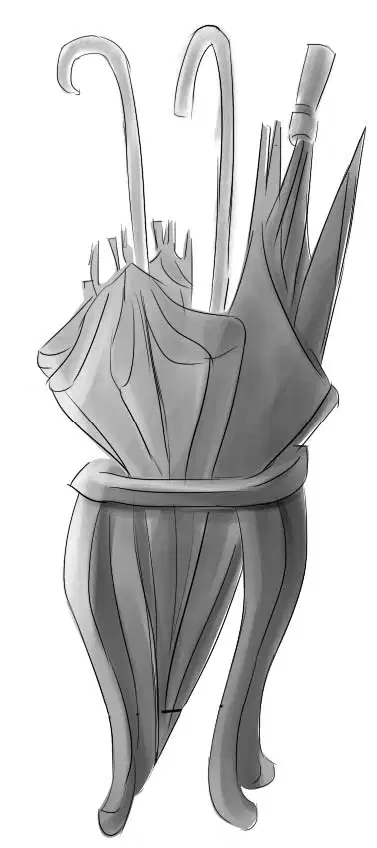
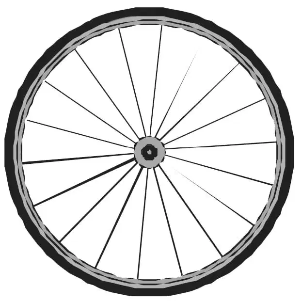
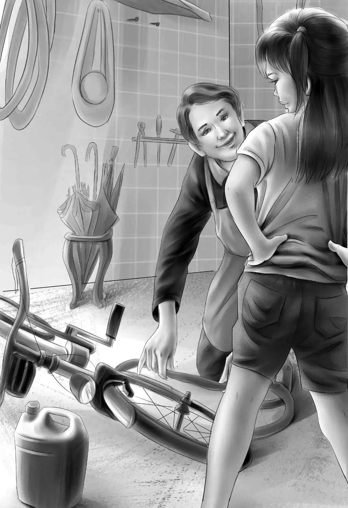
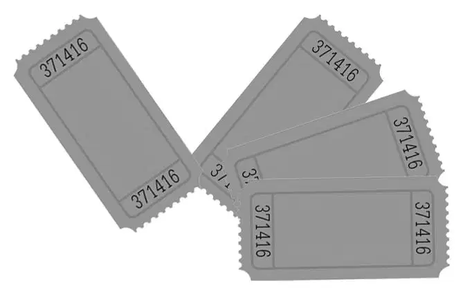

Lucky Day

“车倒不算多，只是咱们不习惯而已。”杰西笑了起来，“咱们一路上都没见到几辆车，小班班。”
“这不就来了一辆吗？好像要停下来了！”班尼兴奋地叫了起来，“噢，不对，是想要拦住咱们的架势！”
话音刚落，一辆轿车便紧贴过来，逼得孩子们只好下车。
杰西悄声道：“就是那对想买——或者想抢小影儿的夫妇。”
这一次，夫妇两人都走下车来。只听男人说道：“你们几个小孩让我一直放心不下，这小狗真不是你们偷来的？”
“偷来的？”班尼激动地喊了起来，“怎么可能！我们从不偷东西，哪怕是一分钱都不会！”
“那你们怎么还把小狗带在身边？记得当初你们承认过，这不是你们的小狗。我们之前见过面，还没忘吧？”
“你听好了，”亨利说道，“我们现在正要回家。我们一直在尽力寻找这条小狗的主人。”
“你当然会捡好听的说。”男人不以为然道，“要是不想让警察发现你们窝藏失踪小狗的话，你们最好是把它卖给我，这是一只表演犬，价钱多少我清楚。”
女人弯下腰，正想去摸一摸小影儿，不料小影儿竟低声咆哮起来。
恰在此时，又有一辆车子开了过来，司机放慢速度，将头探出了车窗。
“遇到麻烦了？”那人友好地问道。
“嗯，有点小麻烦。”亨利说。
“我看是大麻烦！”班尼忍不住叫道，“这小狗是我们骑车旅行的时候碰到的，它已经跟了我们四天，可这人硬说是我们偷来的。我们才没偷！我们正要回家，去找它的主人！”
陌生人仔细地打量着眼前的一男一女，又看了看奥登兄妹，说道：“一看就知道这几个孩子没有说谎，不是么？虽然是第一次见面，但我相信他们，这几个孩子看起来都很诚实。”
“人心隔肚皮，光看外表怎么知道？”男人反驳道，“小狗既然不是他们养的，为什么整整四天都带着？他们自己也说不清这狗的来历，难保不是偷来的。”
“要我看，两位还是早点离开的好。”车里的男人说道，“小狗的事情不劳你们操心，毕竟也不是你们养的，不是么？”
眼见孩子们来了位强硬的帮手，夫妇二人只好转身上车，离开了。
“快看！”班尼叫道，“他们的车牌号！”
“还真是怪事！”杰西说道，“牌照是西海岸的，离这儿有两千多英里呢！他们怎么跑到新英格兰来了？”
亨利点了点头：“没准他们才是偷狗贼！有些人专门做贩狗的买卖。”
“记下他的车牌号了吗？”那人问着，发动了引擎。
“我记下来了。”维莉说。
“我也是。”班尼说，“我都能背下来了。”
“我也写下来了。”那人说道，“他们今后绝不会再找你们的麻烦了。这是我的名片和地址，要是他们再来骚扰，只管找我就是。”说着，他递给亨利一张名片。
孩子们接过来一看，只见上面印着“哈德曼警探事务所”几个字。
“您是便衣警探吗，哈德曼先生？”班尼问道。
“差不多。”那人微笑着答道。
“幸好有您在。”维莉说，“我从来不想惹麻烦，可有些人偏偏喜欢找麻烦。”
“多谢您出面帮忙！”杰西说道。
“没什么，乐意效劳。”哈德曼先生说完，便开着车走了。
孩子们怔怔地站了一阵，一直望着车子消失在视线中。
“真伤脑筋！”班尼愤愤地叫道，“一条漂亮小狗居然招来了这么多麻烦。我都快疯了！”
杰西仔细地打量着班尼，知道他一般情况下不会说出这种话来。
“这样吧！”她提议道，“咱们待会早点吃午饭，正好换换心情。不如就近找个餐厅，怎样？”
大家一致认为这主意不错，纷纷表示赞同，当下骑上自行车，出发了。小影儿依然兴高采烈，一路汪汪欢叫着跑在最前面。维莉则骑在最后面。

过了一英里，孩子们听见维莉叫了声：“等一下！”
大家分别停下车子，杰西回头喊道：“怎么了，维莉？”
“车胎破了。”维莉说，“可能是被什么尖东西刺破了。”
亨利看了看车胎：“是破了。瞧，这儿有块锋利的小石子，跟箭头似的，难怪把车胎扎得透透儿的，不修理的话，肯定没法骑了。”
“换个新胎会好些吧？”杰西说。
“唉，今天真是不幸啊。”班尼叹道，“现在又要去找地方修车。要是修车的地方卖吃的该多好。或者，要是餐馆可以修车也不错。”
孩子们忍不住大笑起来，大家跳下来，推着车继续往前走。
看到班尼仍然有心思说笑，杰西也高兴了起来，只是心里依然没底，不知道要这样走多久才能找到修车店。一路上，大家仔细打量着道路两侧，不错过任何一块招牌。走了一英里左右，前方出现了一座大房子，只见招牌上写着：
大个子小铺
欢迎光临
“看哪！”杰西叫了起来，“难道那是个加油站？”
“不知道。”亨利说，“但它看起来像个废品收购站。”

话音刚落，一个高大的男人出现在敞开的门口，他望了一眼，问道：“有麻烦了吗？进来，让我看。”
维莉把车推进小店，大家焦急地望着店主，只见这个大个子点了点头，微微笑道：“我会很快修好的，你们要去的地方远吗？”
“是啊！”亨利答道，“我们要去绿野镇。”
“我知道绿野镇。”男人说道，“很远呢！修好了，半路又坏了。不如换个新胎吧？”
“我也这样想。”亨利表示赞同，“有型号配得上的吗？”
“什么型号都有。”大个子从墙上取下一个轮胎，动手把旧的换了下来。
维莉感谢道：“这车是我在骑，多亏您能把它修好。”
“我是保加利亚人。”大个子一边说，一边继续着手头的工作，“英语不好。不过你们是好孩子，不像其他人。还带着一只小狗，也很好。”
小影儿的确是一只好狗狗。它默默地蹲在那里等着，一声都不哼。突然，它皱起了鼻子，在空气中嗅了起来。
“大个子先生，”维莉问道，“我的轮胎扎破前，我们正在找餐馆，您知道这附近哪里有吃饭的地方吗？”
大个子笑了起来：“当然知道。就在我这儿——大个子小铺！”
“您这里还可以吃饭吗？”班尼欢呼起来，他好奇地环视了一下四周，但并没发现可以吃饭的地方。
“不是。今天破例，只给你们吃。朝那儿看。”大个子说着，指了指里屋。
班尼和杰西刚刚凑到近前，顿时闻到一股扑鼻的香味，再朝屋里一看，只见一个老式煤炉上放着一口黑色的小汽锅。屋里一个女人转过身来，冲孩子们微微笑道：“你们喜欢羊肉饭吗？留下来吃吧。”
兄妹们互相瞅了瞅，杰西说道：“干吗不留下来呢？亨利，咱们就在这里吃吧。”
“很好。请坐。”大个子的太太说着，从橱架上取下四个碗来，又在每个碗里盛满了羊肉饭。
“你们吃。”她对孩子们说道，“给你，小狗。”她在地板上放了一大块羊骨头给小影儿，骨头上还带着很多肉。
米饭里混着羊肉、洋葱、番茄以及各种好吃的菜肴，孩子们吃得津津有味。他们还就着肉饭，吃了好几块干面包。
吃完之后，他们谢过了女主人，来到店里，自行车已经修好了，亨利向大个子支付了修车和午餐的钱。
接下来，大个子竟然又为他们准备了一份惊喜。
“喜欢狗狗表演吗？”他问道，“阿什比的狗展，我有票。”
“您这里有票卖吗？”杰西问道，“我们早就听说阿什比要办狗展呢。”
“我有好多票。”大个子答道，“我给狗狗做笼子——铁丝笼。”说着，他指了指堆在角落里的几个方形笼子，“所以他们给我好多票。”
“噢，那我们要四张好了！”班尼说道，“我们这只狗狗正好是表演犬，哪能错过这个机会！”
“是的，我知道。”大个子说，“很好的狗狗，会表演的。”说着，他递给亨利四张票。

孩子们分别与大个子握握手，上了自行车。“我们不会忘记您的，大个子先生。”维莉说道，“您对我们太好了。”
大家挥手道别，继续骑行。
“我现在收回之前说的牢骚话。”班尼说，“今天一点也不倒霉。咱们吃了午饭，修了车，现在又弄到四张狗展的票，应该算作幸运日才对。”